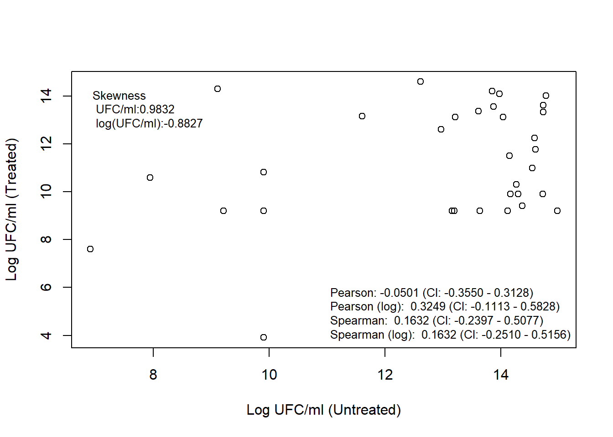
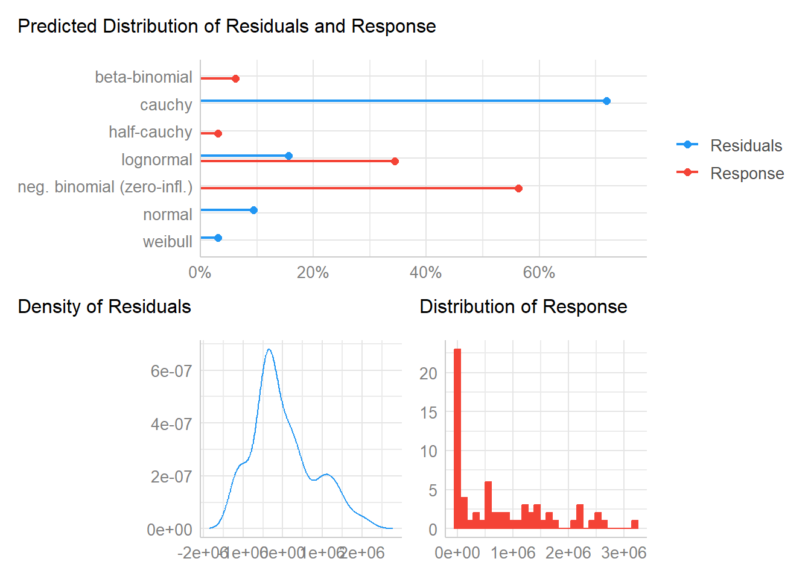
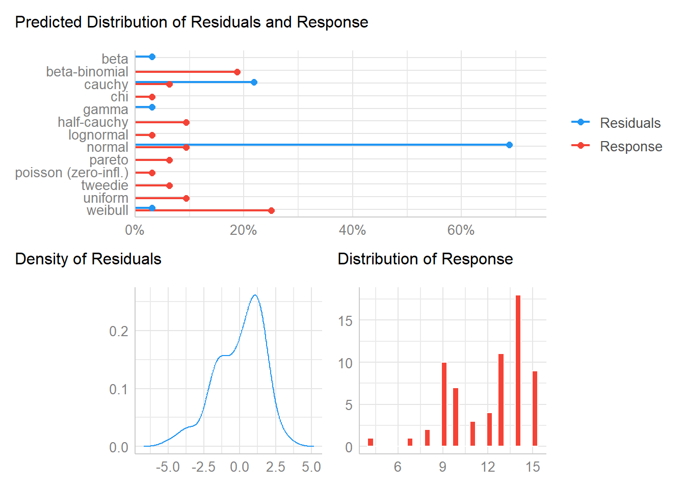

6 Case Study 1: Microbioal tooth data
While simulation methods offer a computationally expensive but insightful approach on the misspecification of the distributional assumption and its impact, which couldn’t have been easily derived from real data, both for its required volume and the large spectrum of parameters to be tested; the review of such a strong and powerful assumption, and its possible misspecification, with real world data is indispensable, as it currently is the field of application of the coefficient. Thus, two datasets have been provided and reviewed. The first has been used as an example of extreme non-normality in a non-longitudinal context, with the assessment on the impact of the transformation of the response variable, while the second dataset offers a longitudinal example with a relevant degree of drop-out, and a certain degree of skewness under one of the methods, whose impact has been explored for the estimates.
The following dataset comes from a pending to be published study1, where the bacterial concentration information of a pair of molars of a total of 33 pediatic patients was collected. These molars were assigned their treatment method following a split mouth design, and the DNA information was collected for each molar using a Qiagen Kit, which allowed to measure the count of colony forming units in the sample, which in the case of this example dataset was of anaerobic bacteria. The dataset also contains information on the solution dilution volume used in the DNA extraction of each sample, and the total count of anaerobic bacteria found, which are necessary parameters to compute the CFU value, and as such they cannot be considered as candidate covariates.
Given the highly non-normal, nature of the Colony Forming Units value, the estimation methods’ robustness to a strong violation of the normality assumption has been tested, and the usefulness of the log-transformation, one of the main methods suggested to further normalize non-normal data2, has also been assessed.
In order to assess the degree of failure of the distributional assumption for the response variable and the error term under the proposed Linear Mixed Model, I have used the check_distribution function from the R package performance3, a large library focused on model testing tools to review model quality and fit, in order to provide an alternative perspective on the ill-definition of the distribution assumption, beyond visual inspection and the common statistical tests for normality (Shapiro-Wilks, and the non-parametric Kolgomorov-Smirnov). The relies on a Random Forest model in order to give a prediction on the distribution of the data (both response and model residuals) given the key statistics (e.g., mode, mean, median, kurtosis, or skewness) of such data.
It is already apparent, given the histogram of the CFU response, that its distribution is rather closer to an exponential than to a normal distribution (with the exponential being the epitome of non-normal distributions). Also the distributional assumption seems to fail for the model residuals, which also goes against one of the core assumptions with the formulation generally derived for the Concordance Correlation Coefficient when derived from a Linear Mixed Model, where the inference about the error term comes from the interpretation that it represents the measurement error, and thus it should be normally distributed. Then the application of the log-transformation (a monotone transformation) for the CFU values has been a common resource used to further normalize the data before carrying statistical analysis4, and not without its fair share of criticism5 6. In the right figure, the assessment for the log-transformed response and for the model’s error term is shown. While the data seems to be further normalized, more clearly in the residuals case, the log CFU histogram shows a rather bi-modal distribution, which might even question the LMM approach for the concordance correlation coefficient, and thus its validity.


Response and residuals predicted distributions
Given the definition by L. I.-K. Lin (1989) of the Concordance Correlation Coefficient as a product between the Pearson’s correlation coefficient \(\rho\) and the bias correction factor \(0 < C_b \le 1\) (\(CCC = \rho C_b\)), the CCC can be viewed as a stricter version of the correlation coefficient, with which it shares the normality assumption. As such non-robust point estimates of the CCC might suffer the identical problem as the correlation coefficient, which for the non-log transformed response variable finds the methods uncorrelated while for the transformed response the point estimate of correlation is low to medium. In comparison the rank-based Spearman correlation coefficient provides by design a transformation-invariant estimate of the correlation, which can be interpreted as the upper bound of the CCC point estimates, given its definition. It is also poignant to indicate that the log-transformation has not reduced the magnitude of the moderate skewness that was already present in the untransformed data, which will limit the reviewed methods’ performances, as seen in the simulation section.
The rest of the review of this case study centers not on the appropriateness of the transformation, but on the study of its impact for the reviewed estimates.
6.1 Results
When working with the untransformed variable, the variance components obtained through the model are themselves levels of magnitude apart (the estimated subject variance was in the order of e+04 while the estimated methods variance and error term were in the order of e+11), which leads to rather extremely small estimated values for the Concordance Correlation Coefficient (for which in the case of the U-statistic estimate even gives a negative value outside of the coefficient’s range). The issues with the estimation of the CCC in this dataset also continue when providing 95% confidence intervals (or 95% highest density intervals for the bayesian case), for which the asymptotic method both in its base form and when it relies upon Fisher’s Z-transformation, it provides negative lower bound estimates (outside of the bounds of the coefficient), which is also the case for the empirical bootstrap intervals and the U-statistic estimate. The problem observed with the confidence interval after applying the Konishi-Gupta transformation, is that the coefficient estimate lies outside of the CI provided. In that sense, the only non-ill-behaved estimates correspond to the bootstrap BCa estimates (both parametric and non-parametric), and the Bayesian model estimate provided. The other Bayesian implementation reviewed (Normal-Normal and Skewnormal-Normal from the agRee7 R package) also fails to produce estimates within the bounds of the coefficient.
| CCC | LL CI 95% | UL CI 95% | SE CCC | |
|---|---|---|---|---|
| Asymptotic | 5.073e-08 | -1.344e-05 | 1.354e-05 | 6.885e-06 |
| Asymptotic (Fisher’s Z) | 5.073e-08 | -1.344e-05 | 1.354e-05 | 6.885e-06 |
| Asymptotic (Z, m=2) | 5.073e-08 | -1.344e-05 | 1.354e-05 | 6.885e-06 |
| Asymptotic (KG transf) | 5.073e-08 | 0.01514 | 0.01516 | 6.885e-06 |
| Param Boot BCa | 5.073e-08 | 1.124e-08 | 0.3248 | 0.07331 |
| Param Boot Emp | 5.073e-08 | -0.2381 | 9.681e-08 | 0.07221 |
| Non-Param Boot BCa | 5.073e-08 | 1.486e-08 | 0.2524 | 0.05034 |
| Non-Param Boot Emp | 5.073e-08 | -0.1784 | 9.553e-08 | 0.05043 |
| U-stat | -0.03049 | -0.2377 | 0.1794 | 0.108 |
| N-N Bayesian (MAP) | 0.0005366 | 2.027e-09 | 0.2384 | 0.08048 |
| N-N Bayesian (agRee) | -0.0288 | -0.2468 | 0.1935 | NA |
| Skew-N Bayesian (agRee) | -0.004061 | -0.1704 | 0.1693 | NA |
After applying the log-transformation, the estimated variance components are of a similar magnitude, and the point estimate for the coefficient has grown across the board (independent of the estimation method). Nonetheless, the lower bound provided by the asymptotic estimate (even after applying Fisher’s Z-transform) still falls outside the coefficient’s domain. A second point of relevance has been the stabilization of the estimate of the standard deviation of the coefficient, which has grown comparatively much more for the asymptotic method, while for the Bayesian and bootstrap cases only doubled, and it remained reasonably consistent for the U-statistic estimate. Finally, the MAP (Bayesian) estimate of the coefficient clearly diverges from the rest, even when it provides a similar upper bound to other methods, while it remains the most consistent with its estimate for the non-transformed case. The only other estimate close, but still over the samples’ spearman correlation coefficient is the skewnormal-normal bayesian estimate, which would indicate that even after the transformation, which effectively shifted the skewness but failed to reduce its magnitude, the generalization approach for the normal distribution, might still not be appropriate.
| CCC | LL CI 95% | UL CI 95% | SE CCC | |
|---|---|---|---|---|
| Asymptotic | 0.2616 | -0.0005759 | 0.5237 | 0.1337 |
| Asymptotic (Fisher’s Z) | 0.2616 | -0.0136 | 0.4999 | 0.1337 |
| Asymptotic (Z, m=2) | 0.2616 | -0.0136 | 0.4999 | 0.1337 |
| Asymptotic (KG transf) | 0.2616 | 0.001547 | 0.5112 | 0.1337 |
| Param Boot BCa | 0.2616 | 0.01546 | 0.4862 | 0.1211 |
| Param Boot Emp | 0.2616 | 0.006969 | 0.5231 | 0.1288 |
| Non-Param Boot BCa | 0.2616 | 7.028e-09 | 0.4886 | 0.1334 |
| Non-Param Boot Emp | 0.2616 | 0.01251 | 0.5231 | 0.1365 |
| U-stat | 0.2557 | 0.01516 | 0.4682 | 0.1175 |
| N-N Bayesian (MAP) | 0.002884 | 3.778e-11 | 0.4847 | 0.1503 |
| N-N Bayesian (agRee) | 0.254 | 0.001095 | 0.5077 | NA |
| Skew-N Bayesian (agRee) | 0.1776 | -0.05301 | 0.4336 | NA |